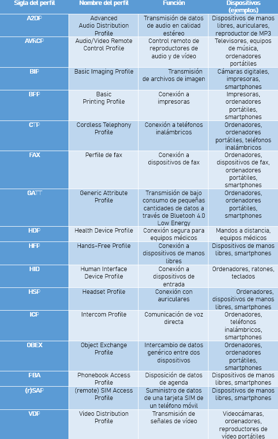

El chip Bluetooth:
Para que un dispositivo sea compatible con Bluetooth debe tener el software adecuado,aparte debe tener un chip Bluetooth que disponga de una unidad transmisora, y otra receptora.
En dispositivos móviles el driver suele venir incluido en el sistema operativo por parte del fabricante.
En portátiles y ordenadores puede ser que no venga incluido y haya que ir a la página del fabricante con el fin de poder instalarlo.
La conexión:
Los dispositivos Bluetooth funcionan entre las bandas de los 2.402GHz y los 2.480GHz. Para poder identificarlos sin errores ni equivocaciones casa dispositivo cuenta con una dirección MAC de 48 bits.
La conexión se puede iniciar en cualquier dispositivo. Este se vuelve “master”, y espera a los dispositivos “slaves”.
Entre todos ellos crean una red llamada “piconet” y seguido de ello hacen “pairing” o emparejamiento.
En algunos casos para hacer emparejamiento se necesita un pin que proporcione uno de los 2 dispositivos.
Piconet:
Es una red integrada como mucho por 8 dispositivos activos. Una piconet podría mantener en teoría hasta 200 dispositivos en modo inactivo.
Un dispositivo puede estar registrado como slave en más de una piconet, pero solo puede funcionar como master en una.
El perfil Bluetooth:
Cada chip Bluetooth viene con una pila o colección de protocolos, como si se tratasen de los controladores de un ordenador:
